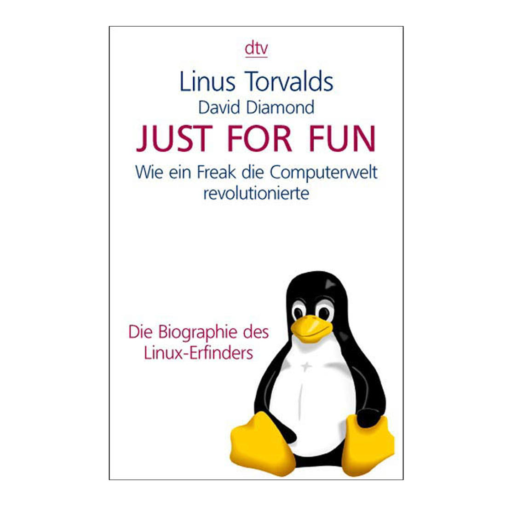

我作为一名程序猿，或者高雅一点叫攻城狮，可以很负责以及悄悄的告诉你：程序猿不是在造bug，就是在解决bug的路上。通俗的讲：程序猿不是在挖坑，就是在埋坑的路上。
没了？嗯，完了！程序猿喜欢用Game Over。是不是太普通，少了点精彩，感觉到失望？是的，这就是那些格子衫扎到大裤衩里，驾着人字拖，眼神里都能凝射出代码，略显平凡而牛逼的程序猿成天干的全部事情。全部？是的，所有思密达，英文叫ALL。
千分之秒读完，内心毫无波澜，一脸茫然，甚至此“真理”还没有放屁来的震撼；怎么办？莫慌别乱，真理都是这么平淡，下面需要详细谈谈。
什么是bug？它是个动物，英文本意“飞蛾”；比如飞蛾扑火的决心和勇气，蛾眉皓齿的小姐姐终生难忘，彰显国学的博大精深。通俗的说就是“扑棱蛾子”，没错，这个北方人都知道。为什么“扑棱蛾子”跑到计算机中串场了呢？
这要引入一段历史，放婆婆特（PPT），解说是这样的：1947年，Grace Hopper在哈佛计算机实验室的Mark II上工作，但是计算机不能正常运转；经过操作员长久的仔细排查，最终发现是由于一只“扑棱蛾子”飞入了计算机内部的继电器中所致。故障排除后，Hopper在日志中记录下来了这一事件，并将嫌疑“蛾”贴于其上（如下图所示）。

从此这只，哦不对，是这位“扑棱蛾子”同志，永垂不朽，名垂千古，也成为后续无数程序猿的噩梦。至此后人使用bug来代指程序中错误导致的功能“故障”，“缺陷”，“异常”，“漏洞”等等；寻找并修复bug的过程称为“delete bug”，简称Debug。而且还有进行时态Debugging，真是日了狗了。
听起来怎么像楼下修电脑的？当然，不是！我们没有螺丝刀，有也不会拿着到处开箱去找“bug”；Grace Hopper的年代还处于计算机的萌芽原始时期，那个时候的计算机还是真空管，继电器原件，整个计算机大的像恐龙，“扑棱蛾子”钻进去很正常，是否还记得上个世纪的老电视可以钻老鼠？经过后期的集成电路的发展，如今的计算机就剩手机那么大了，“扑棱蛾子”想钻也没门；而且现在随便一个手机的计算力甩阿波罗登月全船计算力几条街。来体验一把《回到1969-模拟阿波罗11登月导航计算机AGC》， AGC官网
知道了什么是bug，那么来讲讲为啥要写代码。大部分公司有个岗位叫产品经理，她们既不写代码也不修bug；那她们干啥呢？闲着啊，闲着提需求啊；如果这个世界上评比需求谁最多，那么可以发个吉尼斯证书往她们脖子里一挂。这里的主语我没有打错，你也没有看错，要相信女人真的是这个世界上需求最多的，别问为什么，男人都知道。而恰恰开发基本都是爷们，这真是造孽！！！
产品提出五花八门的需求给程序猿，因产品需求程序猿要使用专业技术来开发实现新功能；因新功能开发就要写代码。无论自己写，还是抄，都是要写代码。这样顺藤摸瓜看起来，根源就是产品经理的锅，别跑，你背定了，哈哈。正所谓，没那么多需求，也不会有那么多杂事；好像是这么个理。是不是产品的锅呢，大家看着办。
这是其一，也是日常写代码的主要来源；有其一，必有其二；其二将与产品经理无半毛钱关系，而且超凡脱俗，白里透红，与众不同。
在这个世界上，当计算机诞生时，虽然不是开天辟地，但是一声炮响，给我们送来了新人类——程序猿；在这个程序猿集体中，有那么一群幽灵，他们深入简出，神龙见首不见尾在网络中游荡；像空气一样不存在，然而一旦显像，就很牛逼，总结起来就是不鸣则已一鸣惊人（可见废话不如高雅来的简洁，但是好懂）。这群幽灵就是黑客。
黑客写代码不是为了挣钱养家糊口，不是为了买房找媳妇，也不会想明天吃米饭还是拉面配肉夹馍，不是为了...，总之没有那么多为什么，但是只有一个为什么，为了好玩——Just for fun。然后一群幽灵为了好玩，扎堆一起玩，这就是小猫Github。

他们突破网站的安防，设计牛逼的算法，解决服务框架异常，发明好玩的东西，分享技术经验和成果等等，并享受这种成就感。这是一个很高的境界和需求水准。从中倡导的开源，知识的共享等等思想，很受人尊敬。他们是一群可爱的幽灵，正是由于他们的智慧和灵感以及提供的各种开源技术，改变了这个世界。
所以，无论程序猿需要满足产品的需求开发，还是满足自己的好玩；由于能力，思维，时间和精力的限制，总会出现考虑不周或者实现逻辑有问题。而这些问题就是软件的bug。
在开发功能过程，程序猿自测干掉一片；然后转交给测试人员，测试人员模仿用户的行为逐个功能验证，再揪出一批。最后几乎完美之际，拉出来溜溜，上线让一部分或者全量用户来体验，再收到一波吐槽；最后经过反反复复的发现纠错发现纠错，最终形成一个稳定的看起来可能还不错的软件。
打个比方来讲，因写逻辑存在问题给自己或他人埋地雷；因地雷被测试人员或者用户踩响，炸伤了使用者的心情，他们反馈给客服或者程序猿求包扎，程序猿抄家伙上线排雷，拆雷。拆好了，皆大欢喜；剪错线了，又炸伤一片。拆雷的过程中，有可能一不小心把兜里的雷又给丢到地里了。
如果换成专业术语来讲，那就是需求，写代码，调试，测试；写代码，调试 ... ... 此处循环N遍，N从0到无穷大；循环的越多，越扎心；最后，部署，发布上线多少还能给程序猿的心灵以安慰。所以，每当你使用软件中遇到一个异常时，是不是可以温柔一点反馈？我们真的不想杀个程序猿来祭奠死去的bug，哦不对，我们真不想用bug来祭奠死去的青春。
那么挖坑和埋坑的意思就不言而喻了。自己挖坑自己埋，自己挖坑别人埋；前人挖坑后人埋；前人挖坑没人埋；——听起来像极了儿歌。挺好玩的，要不你来试试？
最后，总结起来，程序猿干的工作本质就是创造问题，解决问题，区别就是问题因人而异，而且处在这个死循环中，万劫不复。